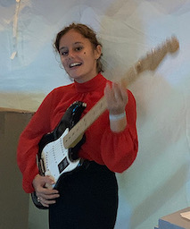

That's Corscia
Hey everybody,
Welcome on my profile!
My name is Emma Mairet, I'm 18 years old. I study at ESSEC in Cergy. I live with 6 other roomates that I really like, it sometimes feels like we are a big family. On weekends, I live with both of my parents and my little sister. I don't know for now, what I want to for a living but I'd like it to be something that respect and act for the environment. If you are still interested, scroll down and discover a little bit more about me.
My hobbies
In my spare time, I play the guitar. As my sister is a singer, we like to do jams together. I do boxing, last year I was in a club, it was amazing because as I was living next to a wood, we would go there and train. I enjoy cooking especially pastry, I even thought of doing that for a living when I was 15. Finally, I like spending time with my friends and family, this is very important for me. Nowadays, I spend more time with my friends because I'm living with them! But as much as I can I try to come home and spend time with my sister, parents, grandparents, cousins. Well, all of the peole that I love.
Corsica
This is also something that is very important for me, so I had to talk about it. My grandma's mother was born there, so I kind of belong there by blood. But in my heart, I totally belong there because I've been there evrey summer vacations for my entire life and so did my father. This is where I truly feel home, the landscapes are breathtaking, people there are more than nice. I like swimming in the sea and have this mountains in front of my eyes. I like walking in those mountains and watch the sea surrounding the isle on both side. More than anything, I like sitting in front of the mountains in the middle of Corsica and think. I already miss it and miss my village.
The environment
Since I read a book, I now feel concerned about the environment and want to act for it. Therefore, with my family we have decided to do little actions such as stop using plastic bags especially for fruits and vegetables, use bamboo toothbrush or making our own household products. Next vacations, my sister and I will be planning a walk to pick up the garbage in the forest. She will organize a manifestation in our town, I'm proud of her and I hope I will be by her side when this will happen. I like following people engaged in this cause and therefore developing new concepts to help our world. My favorite one is Victor Mercier, he has opened a restaurant where everything comes from France (furnitures and food). You should check this out.